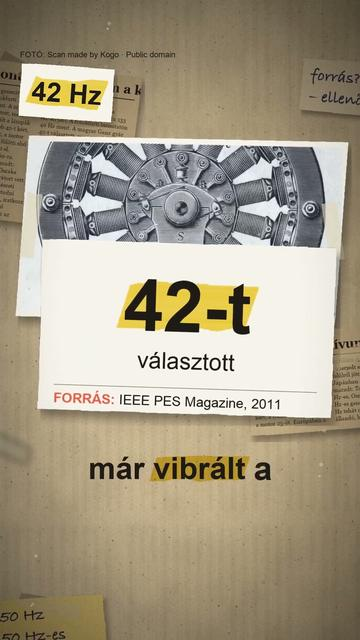

Megnézem a YouTube-onMiért pont 50 Hz az áram a konnektorban?
Röviden: Az 50 Hz nem természeti állandó, hanem mérnöki kompromisszum. A Westinghouse 1886-os első működő váltakozó áramú generátora még 133 Hz-en járt.
Az 50 Hz nem természeti állandó, hanem mérnöki kompromisszum. A Westinghouse 1886-os első működő váltakozó áramú generátora még 133 Hz-en járt. Az 1891-es frankfurti elektrotechnikai kiállításon a Lauffenből 175 km-ről érkező háromfázisú áram 40 Hz-es volt. A magyar Ganz gyár 5000 váltás/perc, azaz kb. 42 Hz mellett döntött, mert ennél alacsonyabb frekvencián a lámpák fénye vibrált. A világításnak legalább 42 Hz, a transzformátoroknak 60 Hz vagy több, az erőátvitelnek kb. 25 Hz kedvezett; Európában a 42 Hz fölötti következő kerek tízes, az 50 Hz lett a szokásos 1900 körül. Észak-Amerikában a 133 és 125 Hz-ről mentek le a 60 Hz-re (G. Neidhöfer, IEEE Power & Energy Magazine, 2011). Japánban a tokiói áramszolgáltató 1895-ben német AEG-generátort vett 50 Hz-re, az oszakai két évvel később amerikai GE-generátort 60 Hz-re; az ország ma is kettéosztott, a két hálózat közti első nagy frekvenciaváltó 1965-ben épült Szakumában (IEEE Milestone). Magyarországon a szolgáltatott áram névleges frekvenciája 50 Hz (ELMŰ). A képek illusztrációk; a japán térkép: Tosaka, CC BY-SA 3.0, Wikimedia Commons.
Az összes rész forrásokkal: https://valoban.pages.dev/
Források
- G. Neidhöfer: 50-Hz frequency – how the standard emerged from a European jumble, IEEE Power & Energy Magazine 9(4), 2011
- IEEE Milestone: Sakuma Frequency Converter Station, 1965 (ETHW)
- ELMŰ Üzletszabályzat, 13.1. melléklet, 2002 (archív másolat)
3 forrás · Hogyan ellenőrzünk?
Hibát találtál? Írd meg nekünk, megnézzük.
Képek és kreditek
Ez a videó a felhasznált CC BY-SA képek miatt CC BY-SA 4.0 licenc alatt érhető el (https://creativecommons.org/licenses/by-sa/4.0/).
• európai (Schuko) konnektor – Retired electrician, CC0 (https://creativecommons.org/publicdomain/zero/1.0/) https://commons.wikimedia.org/?curid=138696527
• Westinghouse váltakozó áramú generátor (Popular Science Monthly, 1893) – Unknown author Unknown author, Public domain (https://creativecommons.org/publicdomain/mark/1.0/) https://commons.wikimedia.org/?curid=12842778
• frankfurti elektrotechnikai kiállítás, 1891: a Lauffenből hajtott műzuhatag – unbekannt, verstorben, Public domain (https://creativecommons.org/publicdomain/mark/1.0/) https://commons.wikimedia.org/?curid=1733563
• a Ganz & Co. váltakozó áramú gépe – Scan made by Kogo, Public domain (https://creativecommons.org/publicdomain/mark/1.0/) https://commons.wikimedia.org/?curid=39897392
• kültéri ívlámpa (rajz, 1905) – Anonymous Unknown author, Public domain (https://creativecommons.org/publicdomain/mark/1.0/) https://commons.wikimedia.org/?curid=81591267
• Japán alaphálózata: nyugaton 60 Hz, keleten 50 Hz – Original: Tosaka, Update: Shigeru23, CC BY-SA 3.0 (https://creativecommons.org/licenses/by-sa/3.0/) https://commons.wikimedia.org/?curid=14721591
• a Tokyo Electric Light erőműve (1910) – Unknown author Unknown author, Public domain (https://creativecommons.org/publicdomain/mark/1.0/) https://commons.wikimedia.org/?curid=76319332
• amerikai konnektor (NEMA 5-15) – JAK83 ; transferred to the Wikimedia Commons by BPK ., Public domain (https://creativecommons.org/publicdomain/mark/1.0/) https://commons.wikimedia.org/?curid=8956748
• Magyarország zászlaja – SKopp, Public domain (https://creativecommons.org/publicdomain/mark/1.0/) https://commons.wikimedia.org/?curid=343602
A képek módosítva: 9:16-ra kivágva, átméretezve, kameramozgással, ráégetett felirattal.